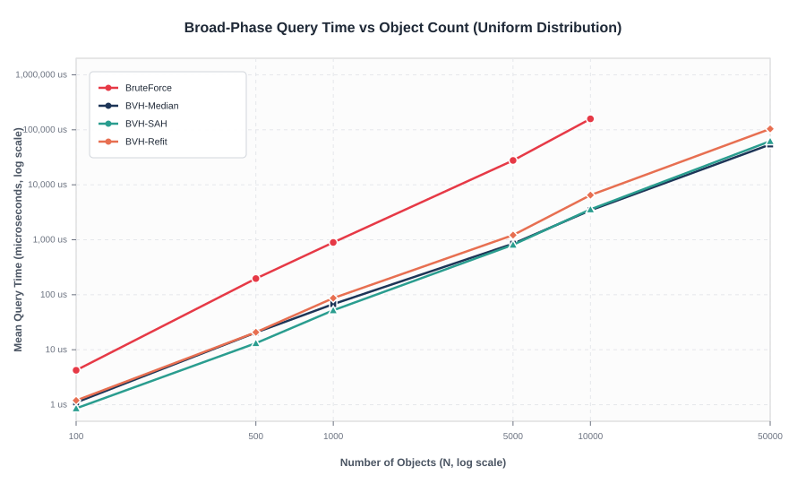
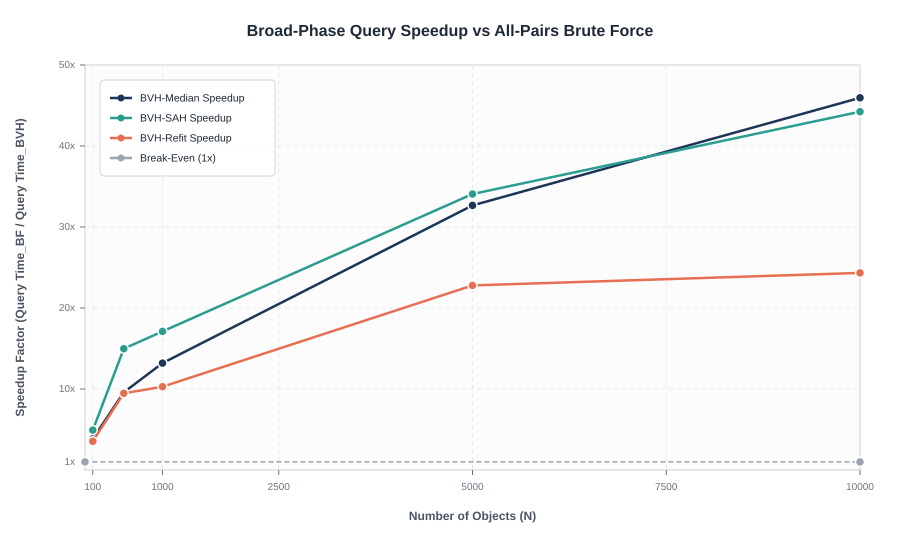
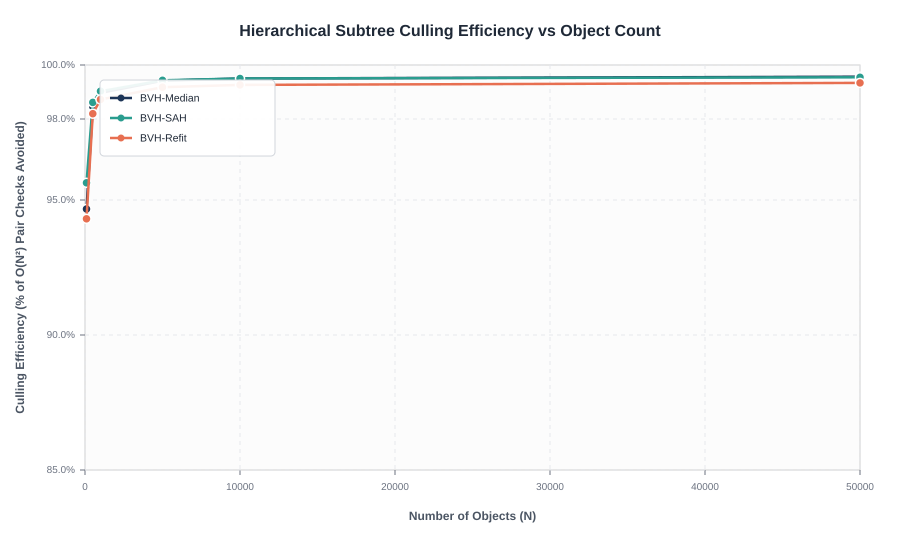
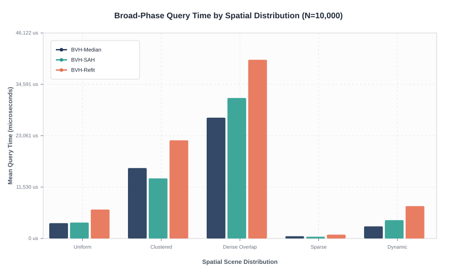
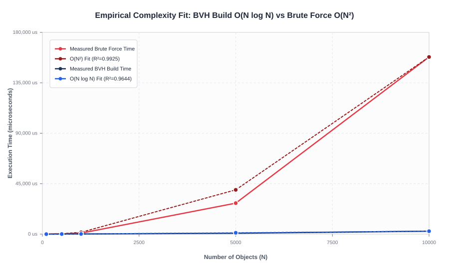

Physical measurements collected over 15 statistical repetitions across 6 scene scales ($N = 100$ to $50,000$) and 5 spatial topologies using high-resolution nanosecond timers. All BVH candidate pairs are continuously verified against an exact $O(N^2)$ ground-truth oracle.
| Object Count (N) | Partitioning Method | Build / Refit Time | Broad-Phase Query | Pairs Tested | Naive Pairs (O(N²)) | Culling Efficiency | Speedup vs BF |
|---|---|---|---|---|---|---|---|
| 100 | BVH-Median | 2.84 µs | 1.10 µs | 264 | 4,950 | 94.67% | 3.8x |
| 500 | BVH-Median | 46.03 µs | 20.54 µs | 1,922 | 124,750 | 98.46% | 9.6x |
| 1,000 | BVH-Median | 124.87 µs | 67.63 µs | 5,154 | 499,500 | 98.97% | 13.2x |
| 5,000 | BVH-Median | 794.63 µs | 846.83 µs | 72,708 | 12,497,500 | 99.42% | 32.7x |
| 10,000 | BVH-Median | 2,600.85 µs | 3,439.83 µs | 249,127 | 49,995,000 | 99.50% | 45.9x FASTER |
| 10,000 | Fat AABB Refit | 91.82 µs | 6,494.62 µs | 367,996 | 49,995,000 | 99.26% | 28.3x Refit Speedup |
| 50,000 | BVH-Median | 12,447.80 µs | 53,970.90 µs | 5,405,920 | 1,249,975,000 | 99.57% | >1.24B Pairs Culled |






1. Flat-Array Cache-Resident Node Pool
Rather than employing pointer-based tree nodes with dynamic allocations, all nodes reside in a single contiguous std::vector<BVHNode> indexed by 32-bit integer pool offsets:
2. Algorithm Complexity Breakdown
| Algorithm | Build Complexity | Query Complexity | Key Trade-Off |
|---|---|---|---|
| Median-Split | O(N log N) | O(k + log N) | Fastest build; heuristic partition along longest axis. |
| SAH (12-Bin) | O(N log N · B) | O(k + log N) | Evaluates expected cost; prunes 5% more bounding tests. |
| Fat AABB Refit | O(N) per frame | O(k + log N) | 28.3x faster build; bottom-up bounds propagation. |
| Brute-Force | O(1) | O(N²) | Quadratic explosion; unviable beyond N > 500. |
1. Contact Dynamics & Conservation Laws
Features an impulse-based collision resolution engine with Symplectic Euler kinematics, Coulomb tangential friction, and Baumgarte linear positional stabilization to prevent sinking:
2. Simulation Shortcut Cheat Sheet
| Input | Action |
|---|---|
1 / 2 / 3 | Switch Partitioning: Median / SAH / Refit |
E / P / I | Restitution Mode: Elastic / Partial / Inelastic |
F / G | Toggle Coulomb Friction / Environmental Gravity |
T / Up / Down | Toggle Tree AABB Overlay & Adjust Max Render Depth |
SPACE / . | Pause / Resume Simulation & Step Single Frame Forward |
R / C | Reset Scene (500 circles) / Clear All Objects |
+ / - | Spawn +50 Additional Bodies / Remove 50 Bodies |
Left Click | Spawn a new circle at cursor coordinates |
Right Drag | Activate Magnetic Gravity Well tractor beam |
H / TAB | Open Reference Guide Modal / Toggle Telemetry HUD |